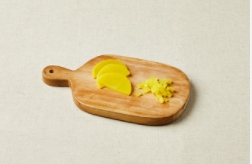
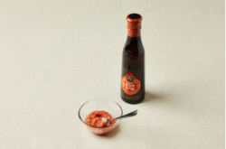
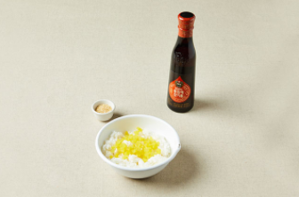
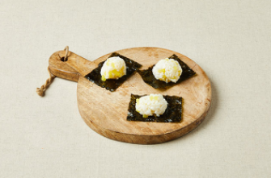
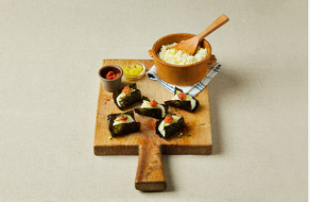
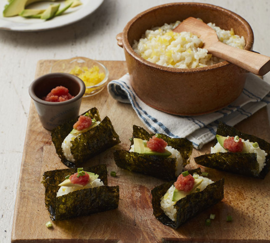

Japanese Food


재료 리스트
김(4g) 1개 | 밥(210g) 1공기 | 참기름 | 아보카도 50g | 단무지 25 | 소금 | 통깨
레시피
1. 단무지는 물기를 제거하고 잘게 다져 주세요..

2. 명란젓 20g에 참기름 2g을 골고루 섞어주세요.

3. 밥을 전자레인지에 데우고 다진 단무지, 참기름 5g, 통깨와 골고루 섞어 주먹밥을 만들어주세요.

4. 김 위에 주먹밥을 올려주세요.

5. 마지막으로 주먹밥 위에 얇게 슬라이스 한 아보카도, 명란 순으로 올려서 마무리해주세요.

김 명란 주먹밥 완성 !!